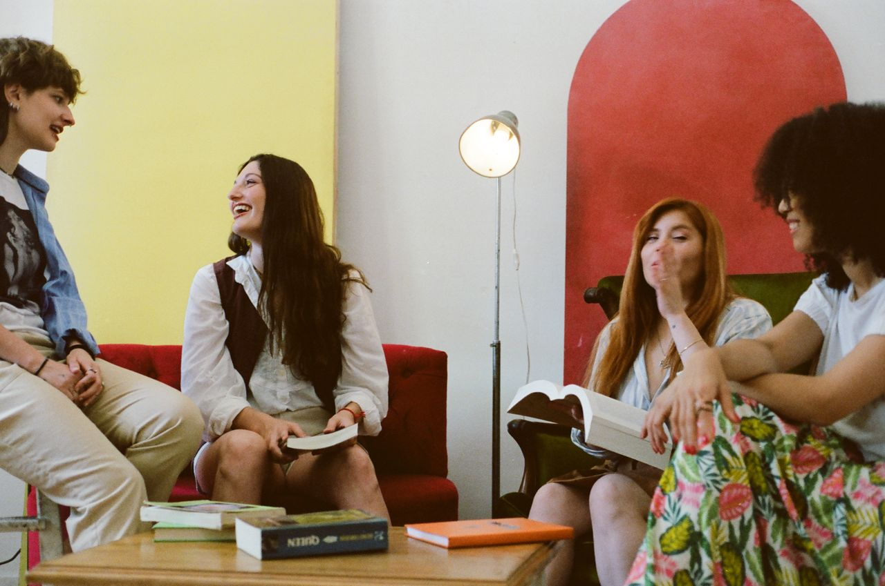
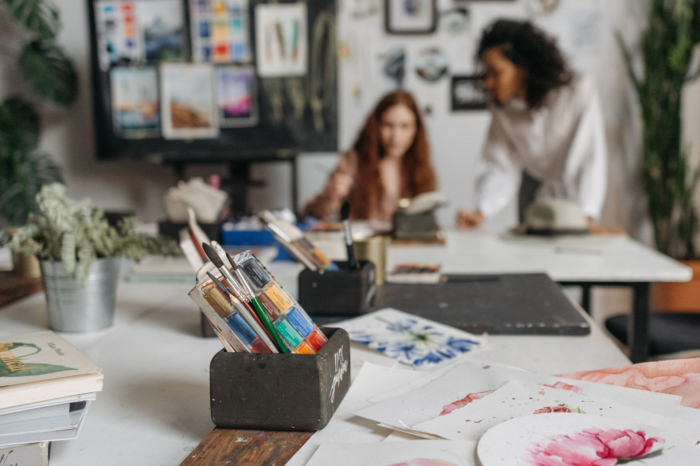
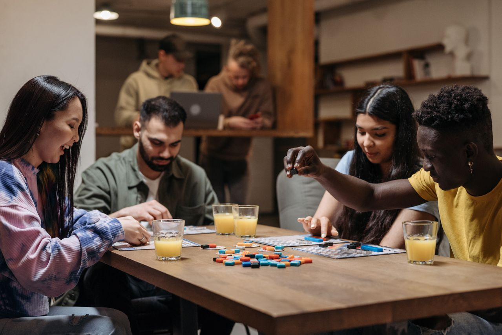

Destaques da programação
Fotografia no cotidiano
Uma oficina introdutória para quem deseja compreender enquadramento, luz e composição utilizando câmeras ou smartphones
Introdução à criação de páginas Web
Atividade voltada aos fundamentos da construção de páginas utilizando HTML e padrões da Web
Clube de leitura - Narrativas brasileiras
Encontro para leitura e discussão de contos de diferentes autores brasileiros

Oficina de desenho de observação
Encontro para desenvolvimento de desenhos de observação

Encontro de jogos de tabuleiro
Encontro para diversão jogando jogos de tabuleiro

Informações:
- Endereço: Rua das Palmeiras, 250 – Centro
- Funcionamento: terça a sábado, das 9h às 21h
- Contato: contato@estacaohorizonte.example